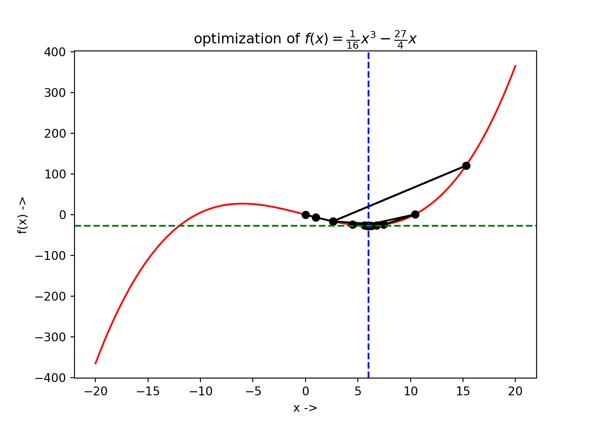

Chapter 3 Solving One Dimensional Optimization Problems
This chapter introduces the detailed study on various algorithms for solving one dimensional optimization problems. The classes of methods that have been discussed are: Elimination method, Interpolation method and Direct Root Finding method. The Elimination method covers the Fibonacci Search method and the Golden Section Search method; the Interpolation method covers Quadratic Interpolation and Inverse Quadratic Interpolation methods; and the Direct Root Finding method covers Newton’s method, Halley’s method, Secant method and Bisection method. Finally a combination of some of these methods called the Brent’s method has also been discussed. Python programs involving the functions provided by the scipy.optimize module for solving problems using the above algorithms have also been provided. For the Fibonacci Search method and the Inverse Quadratic Interpolation method, full Python programs have been written for assisting the readers.
3.1 One Dimensional Optimization Problems
The aim of this chapter is to introduce methods for solving one-dimensional optimization tasks, formulated in the following way: \[\begin{equation} f(x^*)=\underset{x}{\min\ }f(x), x \in \mathbb{R} \tag{3.1} \end{equation}\] where, \(f\) is a nonlinear function. The understanding of these optimization tasks and algorithms will be generalized in solving unconstrained optimization tasks involving objective function of multiple variables, in the future chapters.
3.2 What is a Unimodal Function?
Let us have a look into the figure below.

We have taken the quadratic function of one variable: \(f(x) = 5x^2-3x+2\). It is a nonlinear unimodal function defined over the interval \([-2,2]\), denoted by the dotted lines on either side.. The minimizer \(x^*=0.3\) (which can be solved analytically!), given by the middle dotted line, lies inside the interval \([x_l, x_r]=[-2,2]\). We notice that \(f(x)\) strictly decreases for \(f(x) < f(x^*)\) and strictly increases for \(f(x) > f(x^*)\). The interval \([x_l, x_r]\) that has the minimizer within it, is called the interval of uncertainty and the goal of an optimization algorithm is to reduce this interval as much as possible to converge towards the minimizer. A good algorithm completes the convergence very fast. In each step of this reduction of the interval, the algorithm finds a new unimodal interval following the following procedures:
- Choose two new points, \(x_1 \in [x_l, x^*]\) and another point \(x_2 \in [x^*, x_r]\) (denoted by the two filled straight lines in the figure,
- If \(f(x_2) > f(x_1)\), the new interval becomes \([x_l, x_2]\) and \(x_r\) becomes \(x_2\), i.e, \(x_r=x_2\),
- Next pick a new \(x_2\),
- If condition in step (2) is not satisfied, we set the new interval as \([x_1, x_r]\) directly after step (1) and set \(x_l=x_1\), and
- Next pick a new \(x_1\).
The given steps continue iteratively until the convergence is satisfied to a given limit of the minimizer. These class of methods is called an Elimination Method and we study two categories under this kind:
- Fibonacci Search, and
- Golden Section Search.
Rao’s book Engineering Optimization [Rao, Singiresu S. Engineering optimization: theory and practice. John Wiley & Sons, 2019.] also has some detailed studies on these kinds of optimization methods.
3.3 Fibonacci Search Method
Instead of finding the exact minimizer \(x^*\) of \(f(x)\), the Fibonacci search strategy works by reducing the interval of uncertainty in every step, ultimately converging the interval, containing the minimizer, to a desired size as small as possible. One caveat is that, the initial interval containing, such that the interval lies in it, has to be known beforehand. However, the algorithm works on a nonlinear function, even if it is discontinuous. The name comes from the fact that the algorithm makes use of the famous sequence of Fibonacci numbers [http://oeis.org/A000045]. This sequence is defined in the following way:
\[\begin{align} F_0&=0,F_1=1, \\ F_n&=F_{n-1} + F_{n-2},\text{ where }n=2,3,\ldots \end{align}\]
We write a Python code to generate the first 16 Fibonacci numbers and display them as a table:
import pandas as pd
import numpy as np
def fibonacci(n): # define the function
fn = [0, 1,]
for i in range(2, n+1):
fn.append(fn[i-1] + fn[i-2])
return fn
N = np.arange(16)
data = {'n': N, 'Fibonacci(n)': fibonacci(15)}
df = pd.DataFrame(data)df looks like this:
## +----+-----+----------------+
## | | n | Fibonacci(n) |
## |----+-----+----------------|
## | 0 | 0 | 0 |
## | 1 | 1 | 1 |
## | 2 | 2 | 1 |
## | 3 | 3 | 2 |
## | 4 | 4 | 3 |
## | 5 | 5 | 5 |
## | 6 | 6 | 8 |
## | 7 | 7 | 13 |
## | 8 | 8 | 21 |
## | 9 | 9 | 34 |
## | 10 | 10 | 55 |
## | 11 | 11 | 89 |
## | 12 | 12 | 144 |
## | 13 | 13 | 233 |
## | 14 | 14 | 377 |
## | 15 | 15 | 610 |
## +----+-----+----------------+Let \(n\) be the total number of experiments to be conducted and \([x_l, x_r]\) be the initial interval the algorithm starts with. Let \[\begin{eqnarray} L_0 = x_r - x_l \tag{3.2} \end{eqnarray}\] be the initial level of uncertainty and let us define, \[\begin{eqnarray} L_j = \frac{F_{n-2}}{F_n}L_0 \tag{3.3} \end{eqnarray}\] where, \(F_{n-2}\) and \(F_n\) are the \((n-2)^{th}\) and \(n^{th}\) Fibonacci numbers respectively. We see from the formulation of the Fibonacci numbers that, (3.3) shows the following property: \[\begin{equation} L_j = \frac{F_{n-2}}{F_n}L_0 \leq \frac{L_0}{2} \text{ for } n\geq 2 \end{equation}\] Now, the initial two experiments are set at points \(x_1\) and \(x_2\), where, \(L_j = x_1 - x_l\) and \(L_j = x_r - x_2\). So, combining these with Eq.(3.3), we have: \[\begin{equation} x_1 = x_l + \frac{F_{n-2}}{F_n}L_0 \tag{3.4} \end{equation}\] and \[\begin{equation} x_2 = x_r - \frac{F_{n-2}}{F_n}L_0 \tag{3.5} \end{equation}\] Now taking into consideration the unimodality assumption, a part of the interval of uncertainty is rejected, shrinking it to a smaller size, given by, \[\begin{equation} L_i = L_0 - L_j = L_0(1-\frac{F_{n-2}}{F_n}) = \frac{F_{n-1}}{F_n}L_0 \tag{3.6} \end{equation}\] where, we have used the fact that, \(F_n - F_{n-2} = F_{n-1}\) from the formulation of the Fibonacci numbers. This procedure leaves us with only one experiment, which, from one end, is situated at a distance of \[\begin{equation} L_j = \frac{F_{n-2}}{F_n}L_0 = \frac{F_{n-2}}{F_{n-1}}L_i \tag{3.7} \end{equation}\] where, we have used Eq.(3.3). From the other end, the same experiment point is situated at a distance give by, \[\begin{equation} L_i-L_j = \frac{F_{n-3}}{F_n}L_0 = \frac{F_{n-3}}{F_n}L_0 = \frac{F_{n-3}}{F_{n-1}}L_2 \tag{3.8} \end{equation}\] where, we have again used Eq.(3.3). We now place a new experiment point in the interval \(L_i\) so that both the present experiment points are situated at a distance given by Eq.(3.7). We again reduce the size of the interval of uncertainty using the unimodality conditions. This whole process is continued so that for the \(k^{th}\) experiment point, its location is given by, \[\begin{equation} L_{k[j]} = \frac{F_{n-k}}{F_{n-(k-2)}}L_{k-1} \tag{3.9} \end{equation}\] and the interval of uncertainty is given by, \[\begin{equation} l_{k[i]} = \frac{F_{n-(k-1)}}{F_n}L_0 \tag{3.10} \end{equation}\] after \(k\) iterations are completed. Now, the reduction ratio given by the ratio of the present interval of uncertainty after conduction \(k\) iterations out of the \(n\) experiments to be performed, \(L_{k[i]}\) to the initial interval of uncertainty, \(L_0\): \[\begin{equation} R = \frac{L_{k[i]}}{L_0} = \frac{F_{n-(k-1)}}{F_n} \tag{3.11} \end{equation}\]
The purpose of this algorithm is to bring \(R \sim 0\). The Fibonacci Search Algorithm has been shown below:

We will write a Python function that implements the above algorithm
def fib_search(f, xl, xr, n):
F = fibonacci(n) # Call the fibonnaci number function
L0 = xr - xl # Initial interval of uncertainty
R1 = L0 # Initial Reduction Ratio
Li = (F[n-2]/F[n])*L0
R = [Li/L0]
for i in range(2, n+1):
if Li > L0/2:
x1 = xr - Li
x2 = xl + Li
else:
x1 = xl + Li
x2 = xr - Li
f1, f2 = f(x1), f(x2)
if f1 < f2:
xr = x2
Li = (F[n - i]/F[n - (i - 2)])*L0 # New interval of uncertainty
elif f1 > f2:
xl = x1
Li = (F[n - i]/F[n - (i - 2)])*L0 # New interval of uncertainty
else:
xl, xr = x1, x2
Li = (F[n - i]/F[n - (i - 2)])*(xr - xl) # New interval of uncertainty
L0 = xr - xl
R += [Li/R1,] # Append the new reduction ratio
if f1 <= f2:
return [x1, f(x1), R] # Final result
else:
return [x2, f(x2), R] # Final resultdef f(x): # Objective function
return x**5 - 5*x**3 - 20*x + 5
x = np.linspace(-3, 3, 100)
plt.plot(x, f(x), 'r-')
Now, we consider \(n=25\) and use the function fib_search(f, -2.5, 2.5, 25) to run the optimization and print the results:
## x*: 1.999966677774075## f(x*): -42.99999994448275## Final Reduction Ratio: 0.0We see that \(x^* \sim 2\), \(f(x^*) \sim -43\) and the final Reduction Ration is 0. Now, to show the positions of \(x^*\) and \(f(x^*)\) on the graph of the objective function, we write the following code:

We can modify our function in such a way that all the optimization data in every step are collected
and displayed as a DataFrame:
def fib_search(f, xl, xr, n):
F = fibonacci(n)
L0 = xr - xl
ini = L0
Li = (F[n-2]/F[n])*L0
R = [Li/L0]
a = [xl]
b = [xr]
F1 = [f(xl)]
F2 = [f(xr)]
for i in range(2, n+1):
#print("reduction ratio:", Li/ini)
if Li > L0/2:
x1 = xr - Li
x2 = xl + Li
else:
x1 = xl + Li
x2 = xr - Li
f1, f2 = f(x1), f(x2)
if f1 < f2:
xr = x2
Li = (F[n - i]/F[n - (i - 2)])*L0
elif f1 > f2:
xl = x1
Li = (F[n - i]/F[n - (i - 2)])*L0
else:
xl, xr = x1, x2
Li = (F[n - i]/F[n - (i - 2)])*(xr - xl)
L0 = xr - xl
R += [Li/ini,]
a += [xl, ]
b += [xr, ]
F1 += [f1, ]
F2 += [f2, ]
data = {'n' : range(0, n),
'xl': a,
'xr': b,
'f(x1)': F1,
'f(x2)': F2,
'Reduction Ratio': R}
df = pd.DataFrame(data, columns = ['n', 'xl', 'xr', 'f(x1)', 'f(x2)', 'Reduction Ratio'])
return df
df = fib_search(f, -2.5, 2.5, 25)Where df looks like this:
## +----+-----+----------+---------+-----------+-----------+-------------------+
## | | n | xl | xr | f(x1) | f(x2) | Reduction Ratio |
## |----+-----+----------+---------+-----------+-----------+-------------------|
## | 0 | 0 | -2.5 | 2.5 | 35.4688 | -25.4688 | 0.381966 |
## | 1 | 1 | -0.59017 | 2.5 | 17.7596 | -7.75959 | 0.381966 |
## | 2 | 2 | 0.59017 | 2.5 | -7.75959 | -28.8819 | 0.236068 |
## | 3 | 3 | 1.31966 | 2.5 | -28.8819 | -40.7626 | 0.145898 |
## | 4 | 4 | 1.77051 | 2.5 | -40.7626 | -42.875 | 0.0901699 |
## | 5 | 5 | 1.77051 | 2.22136 | -42.875 | -40.1458 | 0.0557281 |
## | 6 | 6 | 1.94272 | 2.22136 | -42.8424 | -42.875 | 0.0344419 |
## | 7 | 7 | 1.94272 | 2.11493 | -42.875 | -42.2847 | 0.0212862 |
## | 8 | 8 | 1.94272 | 2.04915 | -42.9964 | -42.875 | 0.0131556 |
## | 9 | 9 | 1.98337 | 2.04915 | -42.9863 | -42.9964 | 0.00813062 |
## | 10 | 10 | 1.98337 | 2.02403 | -42.9964 | -42.9707 | 0.00502499 |
## | 11 | 11 | 1.98337 | 2.0085 | -42.9999 | -42.9964 | 0.00310563 |
## | 12 | 12 | 1.99297 | 2.0085 | -42.9975 | -42.9999 | 0.00191936 |
## | 13 | 13 | 1.99297 | 2.00257 | -42.9999 | -42.9997 | 0.00118627 |
## | 14 | 14 | 1.99663 | 2.00257 | -42.9994 | -42.9999 | 0.000733089 |
## | 15 | 15 | 1.9989 | 2.00257 | -42.9999 | -43 | 0.000453182 |
## | 16 | 16 | 1.9989 | 2.00117 | -43 | -42.9999 | 0.000279907 |
## | 17 | 17 | 1.9989 | 2.0003 | -43 | -43 | 0.000173276 |
## | 18 | 18 | 1.99943 | 2.0003 | -43 | -43 | 0.000106631 |
## | 19 | 19 | 1.99977 | 2.0003 | -43 | -43 | 6.66445e-05 |
## | 20 | 20 | 1.99977 | 2.0001 | -43 | -43 | 3.99867e-05 |
## | 21 | 21 | 1.9999 | 2.0001 | -43 | -43 | 2.66578e-05 |
## | 22 | 22 | 1.9999 | 2.00003 | -43 | -43 | 1.33289e-05 |
## | 23 | 23 | 1.99997 | 1.99997 | -43 | -43 | 0 |
## | 24 | 24 | 1.99997 | 1.99997 | -43 | -43 | 0 |
## +----+-----+----------+---------+-----------+-----------+-------------------+The graph of the reduction ratio at each \(n\) can be plotted with the following code:

3.4 Golden Section Search Method
The golden section search method is a modified version of the Fibonacci search method. One advantage of the former over the later is that, we do not need to keep a record of the total number of experiment points \(n\) beforehand. While selecting \(x_1\) and \(x_2\) inside the interval of uncertainty, we make use of the golden ratio, \(\phi = \frac{\sqrt{5} - 1}{2}\) which is the positive root of the quadratic equation given by: \[\begin{equation} \phi^2+\phi-1=0 \tag{3.13} \end{equation}\]
Given the initial interval \([x_l, x_r]\), we have the initial interval of uncertainty as, \[\begin{equation} L_0 = x_r - x_l \tag{3.14} \end{equation}\]
The new interior points \(x_1\) and \(x_2\) are chosen in such a way that both of them lies at a distance \(\phi^2L_0\) from either side, i.e, \[\begin{equation} x_1-x_l = \phi^2L_0 \tag{3.15} \end{equation}\] and \[\begin{equation} x_r-x_2 = \phi^2L_0 \tag{3.16} \end{equation}\]
Now from Eq.(3.13) we know \[\begin{equation} L_0 = (\phi^2 + \phi)L_0 \tag{3.17} \end{equation}\]
The above computations leave us with: \[\begin{equation} x_r - x_1 = \phi L_0 \tag{3.18} \end{equation}\] and \[\begin{equation} x_2 - x_l = \phi L_0 \tag{3.19} \end{equation}\]
Given, \(f(x)\) is the nonlinear objective function, we now check whether \(f(x_1) > f(x_2)\). If this is the case, we set \(x_l = x_1\), otherwise if \(f(x_1) > f(x_2)\), we set \(x_r=x_2\). The new interval of uncertainty is set to be \(L_i = \phi L_0\) and the previous interval is shrunk. This process of choosing new experimental points and shrinking the interval of uncertainty is continued until the termination condition is satisfied. The termination condition is to check whether the interval of uncertainty is less than a particular tolerance \(\epsilon\) usually provided by the user. The golden section search algorithm is given below:

Example 3.2 Let us consider an objective function: \[\begin{equation} f(x) = \frac{1}{16}x^3 - \frac{27}{4}x \tag{3.20} \end{equation}\]
We will use the golden section search method to find the minimizer \(x^*\) of this function and compute \(f(x^*)\). Suppose the initial interval be \([-10, 10]\) and the tolerance for the termination condition for the algorithm be \(\epsilon = 10^{-5}\). Let us first define the function in Python:The graph of the objective function:

For tackling this problem, we will not write our own Python function. As already stated in the last chapter, the scipy.optimize package too equips us with solvers to solve these tasks. For this problem, we use the minimize_scalar() function provided by scipy.optimize, which is used for minimization of a scalar function of one variable. The minimize_scalar() function provides the user with the following parameter:
fun: The objective function which must be callable,bracket: This is an optional parameter and defines the bracketing interval. This is a sequence, and consists of either three points \((x_a, x_b, x_c)\), such that \(x_a < x_b < x_c\) and \(f(x_b) < f(x_a), f(x_c)\), or two points \((x_a, x_b)\) that are considered as the starting interval for any elimination search method,bounds: This is an optional parameter too (important for our analysis!) and is a sequence. This defines the optimization bound, i.e, the initial interval of uncertainty, \([x_l, x_r]\),args: This is a tuple and an optional parameter that defines the extra arguments that might be needed to pass to the objective function,method: This is the most important parameter that defines the various solvers provided byminimize_scalar(). This should be either a string (str) or a callable object. As of writing this book, the solvers thatminimize_scalar()provides are:'golden': Uses the golden section search method for finding the local minimum,'brent': Uses the Brent’s algorithm (will be discussed in the next section) for finding the local minimum,'bounded': For performing bounded minimization and uses theBrent's algorithmto find the local minima specified in the'bounds'parameter. Themethodparameter is optional too, and if not provided, theminimize_scalar()function uses the'brent'method by default. The user can also write and pass a custom solver which must be a Python callable object.
tol: This parameter represents the tolerance (\(\epsilon\)) of the optimization algorithm. This must be afloatand is optional too, andoptions: This is an optional parameter and is a Python dictionary which specifies the solver options:maxiter: This is anintobject and denotes the maximum number of iterations to be performed by the solver,disp: This must be a boolean (bool) object, and if set toTrue, prints a detailed information about the convergence of the algorithm
The minimize_scalar() function returns the optimization result as a specific Python object designed specifically for the scipy.optimize module called, OptimizeResult. It has the following important attributes:
x: The solution (\(x^*\)) of the optimization. This is a numpy array object, i.e,ndarrayand can return a scalar or a vector,success: This is aboolobject and states whether the optimization process has completed successfully or not,fun, jac, hess: Provides the objective function, Jacobian and the Hessian matrix at the solution \(x^*\) asndarrayobjects,nfev, njev, nhev: Provides the number of evaluations of the objective function, its Jacobian and Hessian matrix during the running of the optimization solver and areintobjects,- This is an
intobject and states the number of iterations that have been performed by the solver, and maxcv: This is afloatobject and represents the maximum constraint evaluation.
Now returning back to our example, we have \(f(x)\) defined by Eq.(3.20), we use the golden section search method to find its minimizer. Using the minimize_scalar() function and setting parameters method = 'golden', bounds = (-10, 10) and tol = 10**-5 we can get our solution. We see that the initial interval has been set to \([-10, 10]\) and the tolerance \(\epsilon\) has been set \(10^{-5}\). We write the Python code:
from scipy.optimize import minimize_scalar
result = minimize_scalar(f, bounds = (-10, 10), method = 'golden', tol = 10**-5)
print(result)## fun: -26.99999999991886
## nfev: 32
## nit: 26
## success: True
## x: 5.99999150720724We notice that \(x^* \sim 6\), \(f(x^*) \sim -27\), the number of iterations it took to converge to \(x^*\) is 26 and other attributes that have been listed methodically. With some little extra Python codes, the user can also collect the data of the optimization steps, given below:
## +----+----------+------------+
## | | x | f(x) |
## |----+----------+------------|
## | 0 | 0 | 0 |
## | 1 | 1 | -6.6875 |
## | 2 | 2.61803 | -16.5502 |
## | 3 | 15.287 | 120.093 |
## | 4 | 2.61803 | -16.5502 |
## | 5 | 7.45716 | -24.4179 |
## | 6 | 10.4479 | 0.756678 |
## | 7 | 5.60878 | -26.8316 |
## | 8 | 4.46642 | -24.5796 |
## | 9 | 6.3148 | -26.8866 |
## | 10 | 6.75114 | -26.3388 |
## | 11 | 6.04512 | -26.9977 |
## | 12 | 5.87846 | -26.9835 |
## | 13 | 6.14813 | -26.9751 |
## | 14 | 5.98146 | -26.9996 |
## | 15 | 5.94212 | -26.9962 |
## | 16 | 6.00578 | -27 |
## | 17 | 6.02081 | -26.9995 |
## | 18 | 5.99649 | -27 |
## | 19 | 5.99075 | -26.9999 |
## | 20 | 6.00004 | -27 |
## | 21 | 6.00223 | -27 |
## | 22 | 5.99868 | -27 |
## | 23 | 6.00088 | -27 |
## | 24 | 5.99952 | -27 |
## | 25 | 6.00036 | -27 |
## | 26 | 5.99984 | -27 |
## | 27 | 6.00016 | -27 |
## | 28 | 5.99996 | -27 |
## | 29 | 5.99992 | -27 |
## | 30 | 5.99999 | -27 |
## | 31 | 6.00001 | -27 |
## +----+----------+------------+The optimization steps can be plotted too. The graph with all the function evaluations along with the minimizer \(f(x^*)\) at \(x^*\) has been denoted as a blue dotted line in the below figure which can be generated using the following Python code:

If we analyse closely the optimization data in the dataframe and look at the third, fourth and fifth steps, we see that \(f(x[3]) ~\sim -16.55\), \(f(x[4]) \sim 120.1\) and again \(f(x[5]) ~\sim -16.55\). This interesting overshooting can be also seen in the visualization given by the above figure.
We next discuss interpolation methods to find the minimum of a nonlinear unimodal objective function. This methods use polynomial approximation for modeling the objective function. We will study two methods under this class of methods:
- Powell’s quadratic interpolation method, and
- Inverse quadratic interpolation method
3.5 Powell’s Quadratic Interpolation Method
Suppose, the objective function is \(f(x), x\in \mathbb{R}\) and the minimizer is \(x^*\). Powell’s method use successive quadratic interpolation curves for fitting to the objective function data. This gives a sequence of approximations to \(x^*\), denoted by \(x_t\).
Initially three data points \(x_0, x_1, x_2 \in \mathbb{R}\) are provided. The interpolating quadratic polynomial through these data points \(P(x)\) is as followed: \[\begin{equation} P(x) = f(x_0) + (x - x_0)f[x_0, x_1] + (x-x_0)(x-x_1)f[x_0, x_1, x_2] \tag{3.21} \end{equation}\] where, \[\begin{equation} f[x, y] = \frac{f(y) - f(x)}{y - x} \tag{3.22} \end{equation}\] is the first order forward divided difference, and \[\begin{equation} f[x, y, z] = \frac{f[y, z] - f[x, y]}{z - x} \tag{3.23} \end{equation}\] is the second order forward divided difference. \(x_t\) is the point where the slope of \(P(x)\) curve is \(0\). To find it, we set, \[\begin{align} & \frac{dP(x)}{dx} = 0 \\ &\Rightarrow f[x_0, x_1] + f[x_0, x_1, x_t](2x_t - x_0 - x_1) = 0 \tag{3.24} \end{align}\] So we end up with \(x_t\), \[\begin{equation} x_t = \frac{f[x_0, x_1, x_2](x_0, x_1) - f[x_0, x_1]}{2f[x_0, x_1, x_2]} \tag{3.25} \end{equation}\] For \(x_t\) to be minimum, the following condition regarding the second order forward divided difference should be satisfied, \[\begin{equation} f[x_0, x_1, x_2] > 0 \tag{3.26} \end{equation}\]
We can now say that \(x_t\) is a good approximation to \(x^*\). The algorithm for Powell’s quadratic interpolation method is given below:

def f(x): # define the objective function
return x**4 - 2*x**2 + 1/4
l = np.linspace(-2, 2, 100)
plt.plot(l, f(l), 'r-')We will now write functions for the first order forward divided difference and the second order forward divided difference given by Eq.(3.22) and Eq.(3.22).
def f1(x, y): # First order forward divided difference
return (f(y) - f(x)) / (y - x)
def f2(x, y, z): # Second order forward divided difference
return (f1(y, z) - f1(x, y))/(z - x)Next, we write a function to find out the nearest value to a number n from a list, seq and a function to find out the furthest value to a number n from a list, seq.
def nearest_to(seq, n): # Picks the nearest value to a number entered from a list
return min(seq, key = lambda x: abs(x - n))
def furthest_to(seq, n): # Picks the furthest value to a number entered from a list
return max(seq, key = lambda x: abs(x - n))Let us consider a list be \(L = \{1.1, 2.7, 3.3, 3.2, 1.8, -0.9, -0.5, -6.33\}\) and a number be \(0.7\), we need to find the nearest value to \(0.7\) from \(L\) and the furthest value to \(0.7\) from \(L\). We use the functions:
L = [1.1, 2.7, 3.3, 3.2, 1.8, -0.9, -0.5, -6.33]
n = 0.7
print("The nearest value to", n, "from ", L, ":", nearest_to(L, n))## The nearest value to 0.7 from [1.1, 2.7, 3.3, 3.2, 1.8, -0.9, -0.5, -6.33] : 1.1## The furthest value to 0.7 from [1.1, 2.7, 3.3, 3.2, 1.8, -0.9, -0.5, -6.33] : -6.33We now require to write a function that returns the element from a list that has the maximum value of \(f(x)\) where \(f\) is the objective function.
def maximum_fvalue(seq):
fu = f(np.array(seq)) # Converts a Python list to a ndarray object
return seq[np.where(fu==np.amax(fu))[0][0]] # Picks up the index from the ndarray sequence, the element at which has the maximum f(x) value and returns the element from the sequenceLet us use the same sequence and find out the element from it that fas the maximum value of \(f\),
L = [1.1, 2.7, 3.3, 3.2, 1.8, -0.9, -0.5, -6.33]
print(f(np.array(L))) # Prints the f(x)'s at all the x's from the sequence ## [-7.05900000e-01 3.88141000e+01 9.70621000e+01 8.46276000e+01
## 4.26760000e+00 -7.13900000e-01 -1.87500000e-01 1.52562895e+03]## -6.33We see that from the sequence \(-6.33\) has the highest \(f\) value, that is \(f(-6.33) = 1.52562895\times 10^3\) is the maximum value as can be seen in the printed ndarray. We finally write the function that implements **Powell’s Quadratic Interpolation Algorithm" and name it powell_quad() with the parameters x, s, m, and tol:
def powell_quad(x, s, m, tol):
if f(x) < f(x + s):
x0 = x - s
x1 = x
x2 = x + s
else:
x0 = x
x1 = x + s
x2 = x + 2 * s
L = [x0, x1, x2] # Set x0, x1 and x2
XT = []
while True:
M = f2(L[0], L[1], L[2])
xt = (M * (L[0] + L[1]) - f1(L[0], L[1]))/(2 * M) # The approximate minimizer
xn = nearest_to(L, xt) # Picks the point from [x0, x1, x2] which is the nearest to xt
xf = furthest_to(L, xt) # Picks the point from [x0, x1, x2] which is the furthest to xt
if M > 0 and abs(xt - xn) > m: # Checks for equation 3.26
L.remove(xf) # Remove xf from [x0, x1, x2]
value = min(L) + m
L += [value, ]
L.sort() # Take a step of size m towards the direction of descent from the point with the lowest value
elif M < 0 :
L.remove(xn) # Remove xn from [x0, x1, x2]
value = min(L) + m
L += [value, ]
L.sort() # Take a step of size m towards the direction of descent from the point with the lowest value
else:
# print((xt + xn) / 2, f((xt + xn) / 2)) # If the user wants to print the steps at all function evaluations at the approximate minimizers, uncomment the command
XT += [(xt + xn) / 2, ]
if abs(xt - xn) < tol: # Check for the terminating condition
return [(xt + xn) / 2, f((xt + xn) / 2), XT] # Return the results
else:
mx = maximum_fvalue(L)
L.remove(mx)
L += [xt, ]
L.sort() # Replace the element from [x0, x1, x2] having the maximum function value with xtNow returning back to our original example problem, we have \(x = 0.5\), \(s=10^{-3}\), \(m=30\) and \(\epsilon=10^{-5}\). We will use these values as parameter values for our function powell_quad() and check the result:
## x*: 1.000000513307495## f(x*): -0.7499999999989462Now let us collect the optimization data and store in a dataframe df:
XT = np.array(res[2])
F = f(XT)
data = {'xt': XT, 'f(xt)': F}
df = pd.DataFrame(data, columns=['xt', 'f(xt)'])The last few rows of df looks like:
## +-----+----------+-----------+
## | | xt | f(xt) |
## |-----+----------+-----------|
## | 174 | 1.24152 | -0.456924 |
## | 175 | 0.77715 | -0.593154 |
## | 176 | 1.04659 | -0.740909 |
## | 177 | 0.896613 | -0.711551 |
## | 178 | 1.00525 | -0.749889 |
## | 179 | 0.978394 | -0.748173 |
## | 180 | 0.998358 | -0.749989 |
## | 181 | 0.999505 | -0.749999 |
## | 182 | 1.00004 | -0.75 |
## | 183 | 1 | -0.75 |
## +-----+----------+-----------+To plot the optimization data, type:
We notice that the blue dashed line gives the position of \(x^*\) and the green dashed line gives the corresponding \(f(x^*)\) value.
Now, we change our original problem a little bit and consider the initial starting point to be \(x=-0.5\) and reduce the maximum step size to \(m=10\) , keeping all the other parameters same.
## x*: -1.0000000470794883## f(x*): -0.7499999999999911Now let us collect the optimization data and store in a dataframe df:
XT = np.array(res[2])
F = f(XT)
data = {'xt': XT, 'f(xt)': F}
df = pd.DataFrame(data, columns=['xt', 'f(xt)'])The last few rows of df looks like:
## +----+-----------+-----------+
## | | xt | f(xt) |
## |----+-----------+-----------|
## | 23 | -1.17087 | -0.612412 |
## | 24 | -0.807657 | -0.629111 |
## | 25 | -1.02543 | -0.747348 |
## | 26 | -0.924304 | -0.728783 |
## | 27 | -0.983006 | -0.748864 |
## | 28 | -0.995355 | -0.749914 |
## | 29 | -1.00137 | -0.749992 |
## | 30 | -1.00004 | -0.75 |
## | 31 | -0.999992 | -0.75 |
## | 32 | -1 | -0.75 |
## +----+-----------+-----------+To plot the optimization data, type:
We have \(x^* \sim -1\) and \(f(x^*) \sim -0.75\), i.e, now the \(x^*\) converges to the local minimum on the left side.
3.6 Inverse Quadratic Interpolation Method
The main motivation of using the inverse quadratic interpolation method [refer to An Introduction to Numerical Methods and Analysis by James F. Epperson] is to use the quadratic interpolation method to find the inverse of the objective function \(f(x)\). This algorithm forms an integral part of the Brent’s method for optimization, which we will study later in this chapter. In this method, we have three initial points to start with, given by, \(x_0, x_1, x_2 \in \mathbb{R}\). Our aim is to find the polynomial \(q(f(x))\), such that, \[\begin{equation} q(f(x_j)) = x_j \tag{3.28} \end{equation}\] which identifies, \[\begin{equation} q = f^{-1} \tag{3.29} \end{equation}\]
Now, using the divided difference forms we can write, \[\begin{align} q(y) &= f^{-1}(y_0) + (y - y_0)\frac{f^{-1}(y_1) - f^{-1}(y_0)}{y_1 - y_0}\\ &+ \frac{(y-y_0)(y-y_1)}{(y_2-y_0)}(\frac{f^{-1}(y_2) - f^{-1}(y_1)}{y_2 - y_1} - \frac{f^{-1}(y_1) - f^{-1}(y_0)}{y_1 - y_0})\\ &= x_0 + (y-y_0) \frac{(x-x_0}{(y_1-y_0)}\\ &+\frac{(y-y_0)(y-y_1)}{(y_2-y_0)}(\frac{(x_2 - x_1)}{(y_2-y_1)} - \frac{(x_1-x_0)}{(y_1-y_0)}) \tag{3.30} \end{align}\]
where, \[\begin{equation} y_j = f(x_j) \tag{3.31} \end{equation}\]
Now, the approximate minimizer \(x_t\) is the value \(q(0)=x_t\), i.e, at \(y=0\). Putting \(y=0\) in Eq.(3.30), we have,
\[\begin{equation} x_t = q(0) = x_0 - y_0 \frac{(x_1 - x_0)}{(y_1 - y_0)} + \frac{y_0y_1}{(y_2 - y_0)}(\frac{(x_2 - x_1)}{(y_2 - y_1)} - \frac{(x_1 - x_0)}{(y_1 - y_0)}) \tag{3.32} \end{equation}\]
\(x_t\) can be considered as a good approximate of \(x^*\) after satisfactory number of optimizations steps of the algorithm. The algorithm for inverse quadratic interpolation method is given below:

The above alogorithm looks very simple and it will be left as an exercise for the reader to implement this using Python. An objective function \(f(x)\) can be selected to test the results using this algorithm. Let \[\begin{equation} f(x) = 2 - e^x \tag{3.33} \end{equation}\] One can take the initial experimental point to be \(x=1\), the step size to be \(s=10^{-5}\) and the tolerance to be \(\epsilon=10^{-8}\). \end{example}
In the next section we discuss two direct root finding methods:
- Newton’s method,
- Halley’s method,
- Secant Method, and
- Bisection Method
3.7 Newton’s Method
For a given objective function \(f(x), x\in \mathbb{R}\), the necessary condition for it to contain a minimizer \(x^*\), is that \(\frac{df}{dx}(x^*)=0\). The aim of these direct root-finding methods is thus to obtain the solution of the equation, \[\begin{equation} \frac{df}{dx}(x)=0 \tag{3.34} \end{equation}\]
At point \(x_j\), the Taylor’s expansion of the objective function, up to the second order terms is given by, \[\begin{equation} f(x) = f(x_j) + (x - x_j)\frac{df}{dx}(x_j) + \frac{1}{2}(x - x_j)^2\frac{d^2f}{dx^2}(x_j) \tag{3.35} \end{equation}\]
Now, \[\begin{equation} \frac{df}{dx}(x_j) = 0 \tag{3.36} \end{equation}\] so,
Eq.(3.35) reduces to \[\begin{equation} f(x) = f(x_j) + \frac{1}{2}(x - x_j)^2\frac{d^2f}{dx^2}(x_j) \tag{3.37} \end{equation}\]
Here \(\frac{d^2f}{dx^2}(x_j)\) is a constant. Now, we find the derivative of Eq.(3.37) and set it to \(0\) following Eq.(3.34) \[\begin{align} \frac{df}{dx}(x) &= 0 \\ \frac{df}{dx}(x_j) + (x - x_j)\frac{d^2f}{dx^2}(x_j) &= 0 \tag{3.38} \end{align}\]
We get, \[\begin{equation} x = x_j - \frac{\frac{df}{dx}(x_j)}{\frac{d^2f}{dx^2}(x_j)} \tag{3.39} \end{equation}\]
\(x_j\) denotes an approximation to the minimizer \(x^*\) of \(f(x)\). An improved approximation in the form of an iterative process can be given using Eq.(3.39), \[\begin{equation} x_{j+1} = x_j - \frac{\frac{df}{dx}(x_j)}{\frac{d^2f}{dx^2}(x_j)} \tag{3.40} \end{equation}\]
The termination condition for convergence after a sufficient number of large iterations to \(x^*\) is given by: \[\begin{equation} |\frac{df}{dx}(x_{j+1})| \leq \epsilon \tag{3.41} \end{equation}\]
where, \(\epsilon\) is the tolerance set by the user for the optimization algorithm. In numerical analysis literature, the Newton’s method is also sometimes called the Newton-Raphson method, because it was originally designed by Newton and was later improved by Raphson. The Newton’s method has a fast convergence property called the quadratic convergence.
The algorithm for the Newton’s method is given below:

fprime() for \(\frac{df}{dx}\), i.e, the first derivative and fprime2() for \(\frac{d^2f}{dx^2}\), i.e, the second derivative. We will use the autograd package we discussed before, to define the derivative functions. Let us start with defining the objective function first:
def f(x): # objective function
return x**3 + x**2 -1
l = np.linspace(-2, 2, 100)
plt.plot(l, f(l), 'r-')We now define the functions for the first derivative and the second derivative of \(f(x)\):
To find the value of these derivatives at a given point, we write our code in the following way:
## 0.0## 6.5Now, to implement Newton’s method, we will first introduce the root_scalar() function of the scipy.optimize package, which is used for direct root finding for scalar nonlinear objective functions. We will now discuss the parameters of the root_scalar() function:
f: This is the objective function whose root we need to find, and should be acallablePython data type. It can also be a function returning the objective function and its derivatives.x0: This is the initial experimental point of the optimization process. This is an optional parameter and is afloat.x1: This is the second experimental point of the optimization process. This is an optional parameter and is afloattoo.fprime: This is an optional parameter and can be of two data types:callable: Iffprimeis acallablefunction, it should return the first derivative of the objective function, and must accept the same arguments as the objective function,bool: Iffprimeis a Boolean data type,fshould return the objective function and its first derivative.
fprime2:This is an optional parameter and can be of two data types:callable: Iffprime2is acallablefunction, it should return the second derivative of the objective function, and must accept the same arguments as the objective function,bool: Iffprimeis a Boolean data type,fshould return the objective function and both its first and second derivatives.
xtol: This is the absolute tolerance value for termination of the optimization process. This is an optional parameter and is afloat.rtol: This is the relative tolerance value for termination of the optimization process. This is an optional parameter and is afloat.maxiter: This indicates the maximum number of of iterations the optimization process should run before termination. This is an optional parameter and is anint,args: This is atupleof the extra arguments that can be passed to the objective function and its derivatives. This is an optional parameter too,bracket: This is an optional parameter which indicates an interval that brackets the root of the objective function and is a sequence of two floats,method: Although an optional parameter, themethodparameter is one of the most important parameters that indicate the specific solver that we are going to use for our optimization task. This is astrdata type and has the following solvers predefined in it:'newton': This is Newton’s method for root finding,'halley': This is Halley’s method for root finding,'secant': This is the Secant method for root finding,'bisect': This is the bisection method for root finding,'brentq': This is the method to find the root of an objective function \(f(x)\) using the classic Brent’s method, in a bracketing interval,'brenth': This is used for finding the root of an objective function in a bracketing interval using Brent’s method with hyperbolic extrapolation,'ridder': This is the Ridder’s method of root finding, and'toms748': This is the implementation of the root finding algorithm designed by Alefed, Potro and Shi , called Algorithm 748.
options: This is an optional parameter and is a Python dictionary which specifies the solver options given by the following parameters:solver: This is astrand specifies the type of optimization solver, for example,'minimize_scalar','root_scalar', etc.method: This is astrand is an optional parameter. If not provided, it shows all the methods available for a selected solver,disp: This is abooland is an optional parameter too. If selectedTrue, all the results are printed instead of returning.
The root_scalar() function returns the solution as RootResults object. The important attributes of the RootResults object is defined as:
root: This is the approximate value of the root of the objective function and is afloat,iterations: This indicates the number of iterations the optimization process takes to determine the root of the objective function and is anint,function_calls: This indicates the total number of function evaluations during the optimization process and is anint,converged: This is abooland denotes whether the optimization routine has converged or not,flag: This is astrand gives a description of the cause of termination of the optimization process.
Now, returning back to the original problem, where we intend to find the root of the objective function given by Eq.(3.52), using the Newton’s method, and using the given value of the initial experimental point and the tolerance, we write the following Python code:
from scipy import optimize
def FP(x): # Returns the objective function, its first and second derivative at the point x
return f(x), fprime(x), fprime2(x)
sol = optimize.root_scalar(FP, x0=2., fprime=True, fprime2=True, xtol=10**-6, method='newton') # The solver code, using the method = 'newton'
print(sol) # Prints the results## converged: True
## flag: 'converged'
## function_calls: 6
## iterations: 6
## root: 0.7548776662468297We see the root is approximately \(0.75\), the convergence was successful and there have been \(6\) iterations in the optimization process and the function has been evaluated \(6\) times too. The optimization data has been collected and is shown below:
## +----+----------+--------------+
## | | x | f(x) |
## |----+----------+--------------|
## | 0 | 2 | 11 |
## | 1 | 1.3125 | 2.98364 |
## | 2 | 0.929637 | 0.667639 |
## | 3 | 0.779671 | 0.0818387 |
## | 4 | 0.75548 | 0.00193987 |
## | 5 | 0.754878 | 1.18294e-06 |
## +----+----------+--------------+The optimization steps can be plotted too. The graph with all the function evaluations along with the minimizer \(f(x^*)\) at \(x^*\) has been denoted as a blue dotted line in the below figure which can be generated using the following Python code:
3.8 Halley’s Method
For the objective function \(f(x), x\in \mathbb{R}\), the necessary condition that the minimizer \(x^*\) exists is that \(\frac{df}{dx}(x^*)=0\). At point \(x_j\), the Taylor’s expansion of the objective function upto the second order term is given by Eq. (3.35). A root of \(f(x)\) satisfies \(f(x)= 0\), so , we will have,
\[\begin{align} 0 &= f(x_j) + (x - x_j)\frac{df}{dx}(x_j) + \frac{1}{2}(x - x_j)^2\frac{s^2f}{dx^2}(x_j) \nonumber \\ &= f(x_j) + (x - x_j)[\frac{df}{dx}(x_j) +\frac{1}{2} (x - x_j)\frac{d^2f}{dx^2}(x_j)] \tag{3.53} \end{align}\]
This gives, \[\begin{equation} x - x_j = -\frac{f(x_j)}{\frac{df}{dx}(x_j) + \frac{1}{2}(x - x_j)\frac{d^2f}{dx^2}(x_j)} \tag{3.54} \end{equation}\]
Now, using the fact from Newton’s iteration that,
\[\begin{equation} x - x_j = -\frac{f(x_j)}{\frac{df}{dx}(x_j)} \nonumber \end{equation}\] we can re-write Eq. (3.54) as,
\[\begin{align} x &= x_j - \frac{f(x_j)}{\frac{df}{dx}(x_j) - \frac{1}{2}\frac{f(x_j) \frac{d^2f}{dx^2}(x_j)}{\frac{df}{dx}(x_j)}} \nonumber \\ &= x_j - \frac{2f(x_j)\frac{df}{dx}(x_j)}{2[\frac{df}{dx}(x_j)]^2 - f(x_j)\frac{d^2f}{dx^2}(x_j)} \tag{3.55} \end{align}\]
The iterative method [ref, wolfram mathworld, Halley’s method] can be thus written as \[\begin{equation} x_{j+1} = x_j - \frac{2f(x_j)\frac{df}{dx}(x_j)}{2[\frac{df}{dx}(x_j)]^2 - f(x_j)\frac{d^2f}{dx^2}(x_j)} \tag{3.56} \end{equation}\]
The termination condition for convergence after a sufficient number of large iterations to \(x^*\) is given by: \[\begin{equation} |\frac{df}{dx}(x_{j+1})| \leq \epsilon \tag{3.57} \end{equation}\] where, \(\epsilon\) is the tolerance set by the user for the optimization algorithm. The Halley’s method has a fast convergence property called the cubic convergence.
Proof. Assuming that the third derivative of the objective function exists and is continuous in a neighborhood of \(x^*\) and \(x_j\) lies in that neighborhood, using the Taylor’s expansion up to the third order term, we get, \[\begin{align} & &f(x^*) = f(x_j) + (x^* - x_j)\frac{df}{dx}(x_j) + \frac{1}{2!}(x^* - x_j)^2\frac{d^2f}{dx^2}(x_j)\nonumber \\ & &+ \frac{1}{3!}(x^* - x_j)^3\frac{d^3f}{dx^3}(\alpha) \nonumber \\ &\implies& 0 = f(x_j) + (x^* - x_j)\frac{df}{dx}(x_j) + \frac{1}{2}(x^* - x_j)^2\frac{d^2f}{dx^2}(x_j)\nonumber \\ & &+ \frac{1}{6}(x^* - x_j)^3\frac{d^3f}{dx^3}(\alpha) \tag{3.59} \end{align}\] And also, using Taylor’s theorem up to second order terms, \[\begin{align} & &f(x^*) = f(x_j) + (x^* - x_j)\frac{df}{dx}(x_j) + \frac{1}{2!}(x^* - x_j)^2\frac{d^2f}{dx^2}(\beta) \nonumber \\ &\implies&f(x^*) = f(x_j) + (x^* - x_j)\frac{df}{dx}(x_j) + \frac{1}{2}(x^* - x_j)^2\frac{d^2f}{dx^2}(\beta) \tag{3.60} \end{align}\] Here, \(\alpha, \beta \in [x^*, x_j]\). Now, (Eq. (3.59) \(\times 2 \frac{df}{dx}(x_j) -\) (Eq. (3.60)) \(\times (x^* - x_j)\frac{d^2f}{dx^2}(x_j)\) gives,
\[\begin{align} 0 &=& 2f(x_j)\frac{df}{dx}(x_j) + 2(x^* - x_j)[\frac{df}{dx}(x_j)]^2 + \frac{1}{3}(x^* - x_j)^3\frac{df}{dx}(x_j)\frac{d^3f}{dx^3}(\alpha) \nonumber \\ &-& (x^*-x_j)f(x_j)\frac{d^2f}{dx^2}(x_j) - \frac{1}{2}(x^* - x_J)^3\frac{d^2f}{dx^2}(x_j)\frac{d^2f}{dx^2}(\beta) \nonumber \\ &=& 2f(x_j)\frac{df}{dx}(x_j) + (x^* - x_j)(2[\frac{df}{dx}(x_j)]^2 - f(x_j)\frac{d^2f}{dx^2}(x_j)) \nonumber \\ &+& (x^* - x_J)^3(\frac{1}{3}\frac{df}{dx}(x_j)\frac{d^3f}{dx^3}(\alpha) - \frac{1}{2}\frac{d^2f}{dx^2}(x_j)\frac{d^2f}{dx^2}(\beta)) \tag{3.61} \end{align}\]
Now, dividing Eq. (3.61) with \((2[\frac{df}{dx}(x_j)]^2 - f(x_j)\frac{d^2f}{dx^2}(x_j))\), we have, \[\begin{align} x^* - x_j &=& -\frac{2f(x_j)\frac{df}{dx}(x_j)}{2[\frac{df}{dx}(x_j)]^2 - f(x_j)\frac{d^2f}{dx^2}(x_j)} \nonumber \\ &-& (x^* - x_j)^3 \frac{2\frac{df}{dx}(x_j)\frac{d^3f}{dx^3}(\alpha) - 3\frac{d^2f}{dx^2}(x_j)\frac{d^2f}{dx^2}(\beta)}{6(2[\frac{df}{dx}(x_j)]^2 - f(x_j)\frac{d^2f}{dx^2}(x_j))}\tag{3.62} \end{align}\]
Now subtracting Eq. (3.56) from Eq. (3.62), we have, \[\begin{align} x^* - x_{j+1} = - (x^* - x_j)^3 \frac{2\frac{df}{dx}(x_j)\frac{d^3f}{dx^3}(\alpha) - 3\frac{d^2f}{dx^2}(x_j)\frac{d^2f}{dx^2}(\beta)}{6(2[\frac{df}{dx}(x_j)]^2 - f(x_j)\frac{d^2f}{dx^2}(x_j))} \tag{3.63} \end{align}\]
which can be written as, \[\begin{align} & &x_{j+1} - x^* = - (x_j - x^*)^3 \frac{2\frac{df}{dx}(x_j)\frac{d^3f}{dx^3}(\alpha) - 3\frac{d^2f}{dx^2}(x_j)\frac{d^2f}{dx^2}(\beta)}{6(2[\frac{df}{dx}(x_j)]^2 - f(x_j)\frac{d^2f}{dx^2}(x_j))} \nonumber \\ & &|x_{j+1} - x^*| \leq -\frac{2\frac{df}{dx}(x_j)\frac{d^3f}{dx^3}(\alpha) - 3\frac{d^2f}{dx^2}(x_j)\frac{d^2f}{dx^2}(\beta)}{6(2[\frac{df}{dx}(x_j)]^2 - f(x_j)\frac{d^2f}{dx^2}(x_j))} |(x_j - x^*)|^3 \tag{3.64} \end{align}\]
Now, \(\frac{df}{dx}(x_j)\) converges to \(\frac{df}{dx}(x^*)\) and \(\frac{d^2f}{dx^2}(x_j)\) converges to \(\frac{d^2f}{dx^2}(x^*)\) due to continuity of \(f(x)\). \(\beta, \alpha\), lying between \(x_j\) and \(x^*\) converges to \(x^*\) too, resulting in the convergence of \(\frac{d^2f}{dx^2}(\beta)\) to \(\frac{d^2f}{dx^2}(x^*)\) and \(\frac{d^3f}{dx^3}(\alpha)\) to \(\frac{d^3f}{dx^3}(x^*)\). So, As \(j \to \infty\), we have
\[\begin{equation} |x_{j+1} - x^*| \leq K |x_j - x^*|^3, \text{ if }K > -\frac{2\frac{df}{dx}(x_j)\frac{d^3f}{dx^3}(\alpha) - 3\frac{d^2f}{dx^2}(x_j)\frac{d^2f}{dx^2}(\beta)}{6(2[\frac{df}{dx}(x_j)]^2 - f(x_j)\frac{d^2f}{dx^2}(x_j))} \tag{3.65} \end{equation}\] This completes our proof of cubic convergence for Halley’s method.The algorithm of the Halley’s method is given below:

def f(x): # Objective function
return x**3 - 6*x**2 + 11*x - 6
fprime = grad(f) # First derivative of the objective function
fprime2 = grad(fprime) # Second derivative of the objective function Next, we use the root_scalar() function of the scipy.optimize module and set the attributes x0=3.7, method = 'halley', xtol=10**-6 and so on, according to our need.
def FP(x): # Returns the objective function and its derivatives
return f(x), fprime(x), fprime2(x)
sol = optimize.root_scalar(FP, x0=3.7, fprime=True, fprime2=True, xtol=10**-6, method='halley')
print(sol)## converged: True
## flag: 'converged'
## function_calls: 4
## iterations: 4
## root: 2.9999999999999996where, we notice that the root is \(\sim 3\). The optimization data has been collected and is shown below:
## +----+---------+-------------+
## | | x | f(x) |
## |----+---------+-------------|
## | 0 | 3.7 | 3.213 |
## | 1 | 3.11936 | 0.283171 |
## | 2 | 3.00207 | 0.00415786 |
## | 3 | 3 | 3.09493e-08 |
## +----+---------+-------------+The plot of the optimization steps showing the convergence of the root, along with the root being denoted by the vertical broken blue line and its corresponding function value denoted by horizontal broken green line has been shown below:
3.9 Secant Method
The formulation of the secant method looks similar to that of (3.38).
\[\begin{equation} \frac{df}{dx}(x_j) + s\frac{d^2f}{dx^2}(x_j) = 0 \tag{3.67} \end{equation}\]
Where, \(s\) is the slope of the line connecting the points \((a, \frac{df}{dx}(a))\) and \((b, \frac{df}{dx}(b))\) on the \(x-\frac{df}{dx}\) plane. \(a\) and \(b\) are two different approximations to the root of the objective function. We know the equation for the slope, \[\begin{align} s = \frac{\frac{df}{dx}(b) - \frac{df}{dx}(a)}{b - a} \tag{3.68} \end{align}\]
So, (3.67) can be written as: \[\begin{eqnarray} x &-& x_j = -\frac{\frac{df}{dx}(x_j)}{s} \nonumber \\ x &=& x_j - \frac{\frac{df}{dx}(a)(b - a)}{\frac{df}{dx}(b) - \frac{df}{dx}(a)} = a - \frac{\frac{df}{dx}(a)(a - b)}{\frac{df}{dx}(a) - \frac{df}{dx}(b)} \tag{3.69} \end{eqnarray}\]
The iterative process, known as the secant method is thus given by, \[\begin{equation} x_{j+1} = x_j - \frac{\frac{df}{dx}(x_j)(x_j - x_{j-1})}{\frac{df}{dx}(x_j) - \frac{df}{dx}(x_{j+1})} \tag{3.70} \end{equation}\]
The secant of a curve is a line that intersects the curve at minimum of two distinct points. As \(b \to a\), the secant approaches \(\frac{d^2f}{dx^2}(a)\). Due to this reason, the secant method is also called the quasi-Newton method. The root \(x^*\) lies between the points \(a\) and \(b\) if the following condition is satisfied:
\[\begin{equation} \frac{df}{dx}(a)\frac{df}{dx}(b) < 0 \tag{3.71} \end{equation}\]
As we have seen, the iteration process demands two initial points to start with, i.e, \(a\) and \(b\). The iterates \(x_j\) converges to the root of the objective function when \(a\) and \(b\) are close to the root. The order of convergence for the process is given by the number \(\phi=\frac{\sqrt{5}+1}{2} \approx 1.618\), which is the golden ratio, i.e, the secant method has a superlinear convergence, unlike a quadratic or a cubic convergence.
The algorithm of the secant method is given below:

The plot for this objective function can be generated in the following way:
The corresponding \(x-\frac{df}{dx}(x)\) plot is given below:
def f(x): return x*au.cos(x**2-7*x)-2*x
l = np.linspace(-3, 3., 1000)
G = grad(f)
h=[]
for i in l:
h+=[G(i),]
h = np.array(h)
plt.plot(l, h, 'b-')This chapter is under development